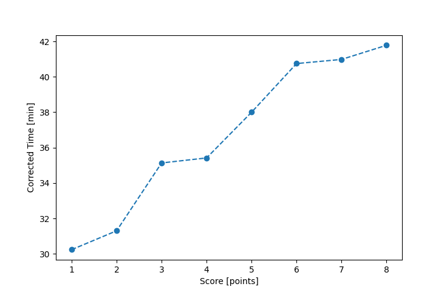

| Wind: | ? (BFT) |
|---|---|
| RC: | Chris_E , Nick_H , Stacy_O |
| Date: | May 15, 2016 |
| Notes: | M2 90 |
| Rank / Score | Name | Boat | Input Time [mm:ss] | Input Offset [mm:ss] | Race Time [mm:ss] | Race Time [s] | Handicap | Corrected Time [s] | Corrected Time [mm:ss] |
|---|---|---|---|---|---|---|---|---|---|
| 1.0 | Bill_P | SF | 33:46 | 00:00 | 33:46 | 2026 | 1.03000 | 1967 | 32:47 |
| 2.0 | Rod_H | PUF | 37:17 | 00:00 | 37:17 | 2237 | 1.08700 | 2058 | 34:18 |
| 3.0 | Art_M | SWSX | 34:18 | 00:00 | 34:18 | 2058 | 0.99400 | 2070 | 34:30 |
| 4.0 | Ron_F | F5 | 34:05 | 00:00 | 34:05 | 2045 | 0.98100 | 2085 | 34:45 |
| 5.0 | Pat_B | WF | 34:31 | 00:00 | 34:31 | 2071 | 0.94000 | 2203 | 36:43 |
| 6.0 | Todd_P | SN | 37:00 | 00:00 | 37:00 | 2220 | 0.94800 | 2342 | 39:02 |
| 8.0 | Patrick_L | SN | DNF | -- | -- | -- | -- | -- | DNF |
| 8.0 | Barry_O | HLR14 | DNF | -- | -- | -- | -- | -- | DNF |

Application Notes:
All race results are unofficial
View source code at https://github.com/cessnao3/portsmouthracecalc/